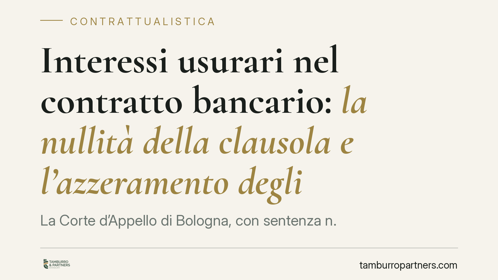

Interessi usurari nel contratto bancario: la nullità della clausola e l'azzeramento degli oneri
La Corte d'Appello di Bologna, con sentenza n. 1527/2026, ha ribadito un principio netto: se nel contratto bancario è pattuito un tasso usurario, la clausola sugli interessi è nulla anche quando non è mai stata applicata. Il contratto diventa gratuito e gli interessi, compreso l'anatocismo, si azzerano. Una pronuncia che incide direttamente sulla gestione del contenzioso bancario.

Il fatto
Una società correntista di Parma ha contestato alla banca l'applicazione di interessi oltre il limite consentito dalla legge. Il Tribunale di Parma, sulla base di una consulenza tecnica d'ufficio (CTU), aveva accertato il superamento della soglia d'usura al momento della pattuizione. La Corte d'Appello di Bologna, con la sentenza n. 1527/2026, ha confermato l'orientamento, chiarendo le conseguenze sul rapporto contrattuale.
Il punto centrale: il superamento della soglia va valutato al momento in cui gli interessi sono stati convenuti, non al momento in cui sono stati concretamente addebitati. È il cosiddetto principio dell'usura "genetica" (originaria), contrapposto all'usura "sopravvenuta".
Inquadramento normativo
La disciplina ruota attorno a due norme.
L'art. 644 del Codice penale definisce il reato di usura e, al comma terzo, rinvia alla legge per la determinazione del limite oltre il quale gli interessi sono sempre usurari. Tale soglia è fissata periodicamente con decreto ministeriale sulla base dei tassi medi di mercato (il cosiddetto TEGM, tasso effettivo globale medio).
L'art. 1815, comma 2, del Codice civile stabilisce la sanzione civilistica: se sono convenuti interessi usurari, la clausola è nulla e non sono dovuti interessi. La norma non prevede una semplice riduzione entro la soglia, ma la totale eliminazione dell'obbligo di corrispondere interessi. Il mutuo o il rapporto di conto, da oneroso, diventa gratuito.
La Corte di Bologna ha applicato rigorosamente questa impostazione: una volta accertato che il tasso pattuito eccedeva la soglia alla data della stipulazione, la clausola è nulla a prescindere dall'effettivo addebito. Conta la pattuizione, non l'applicazione.
Implicazioni pratiche
Per chi ha sottoscritto un contratto bancario — mutuo, apertura di credito, affidamento in conto corrente — la pronuncia conferma che la verifica del tasso deve concentrarsi sul momento della firma.
Tre conseguenze meritano attenzione.
La prima: l'azzeramento riguarda tutti gli interessi, corrispettivi e moratori, non solo la quota eccedente la soglia. Non si tratta di ricondurre il tasso al limite legale, ma di eliminarlo del tutto.
La seconda: viene meno anche l'anatocismo, cioè la produzione di interessi sugli interessi già maturati. Caduta la clausola madre, cade anche il meccanismo che su di essa si fonda.
La terza: il correntista o mutuatario che abbia già pagato interessi su un rapporto affetto da usura originaria può, in linea di principio, agire per la restituzione delle somme indebitamente versate, nei limiti della prescrizione.
Attenzione, però: l'accertamento dell'usura è un'operazione tecnica. Richiede il calcolo del TEG (tasso effettivo globale) del contratto e il confronto con la soglia vigente alla data di stipula, includendo commissioni, spese e oneri collegati all'erogazione del credito. È il motivo per cui, nel giudizio di Parma, il ruolo della CTU è stato decisivo.
Cosa fare in concreto
- Recuperate la documentazione contrattuale completa: contratto originario, fogli informativi, documenti di sintesi e, per i conti correnti, gli estratti conto dall'apertura del rapporto.
- Individuate la data di stipulazione e verificate quale soglia d'usura era in vigore in quel trimestre, consultando i decreti ministeriali pubblicati periodicamente.
- Fate calcolare il TEG del contratto da un tecnico qualificato, includendo tutti i costi connessi al credito e non solo il tasso nominale.
- Valutate i termini di prescrizione prima di agire per la ripetizione delle somme: la decorrenza varia a seconda della natura del rapporto e del tipo di versamento.
- Verificate la posizione complessiva prima di sospendere i pagamenti: la contestazione dell'usura non autorizza automaticamente a interrompere le rate, e scelte affrettate possono esporre a conseguenze sul rapporto.
La sentenza bolognese si inserisce in un filone consolidato, ma conferma l'importanza di un'analisi tecnica rigorosa. La differenza tra un rapporto valido e un contratto divenuto gratuito si gioca spesso su dettagli di calcolo che solo una verifica puntuale può far emergere.
Disclaimer
Contributo informativo a cura di Tamburro & Partners - Avv. Giuseppe Tamburro. Non costituisce parere legale.
Ogni contratto ha il suo equilibrio.
Se vuoi una revisione delle clausole o una redazione su misura, scrivi allo studio. Ti rispondiamo entro un giorno lavorativo.